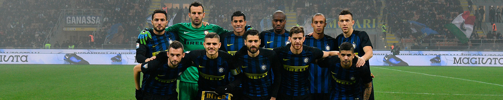
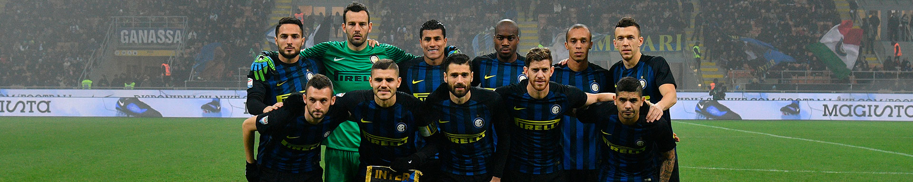

Home
F.C. Internazionale, abbreviato Inter, è una squadra di calcio di Milano che milita nel campionato di Serie A.
E' stata fondata nel 1908 da un gruppo di soci dissidenti del Milan.
Questo è il suo sito non ufficiale.
F.C. Internazionale, abbreviato Inter, è una squadra di calcio di Milano che milita nel campionato di Serie A.
E' stata fondata nel 1908 da un gruppo di soci dissidenti del Milan.
Questo è il suo sito non ufficiale.
